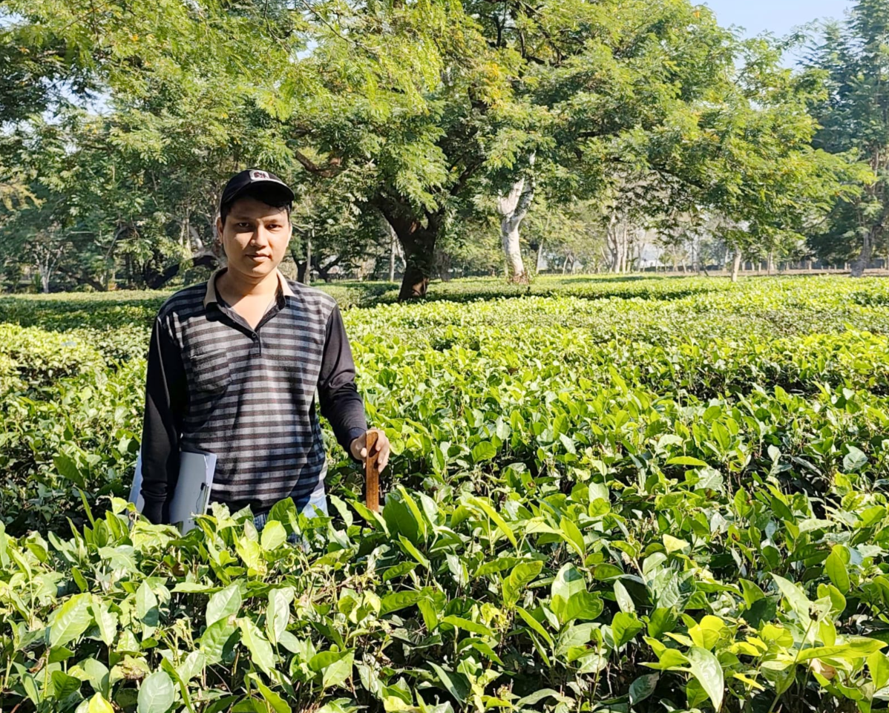
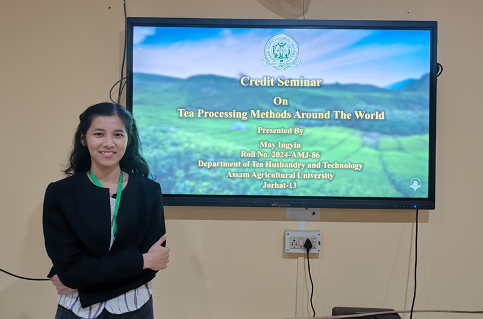

Myanmar MSc Students at Assam Agricultural University
TeaTechSeekers is a platform created by Myanmar M.Sc. students studying at Assam Agricultural University to share academic knowledge, research activities, student experiences, and innovations in tea science and technology.

“In the heart of India's tea industry, I learn, research, and innovate to strengthen the future of tea.”
“Growing knowledge, adding value, and shaping the future of tea at Assam Agricultural University.”
